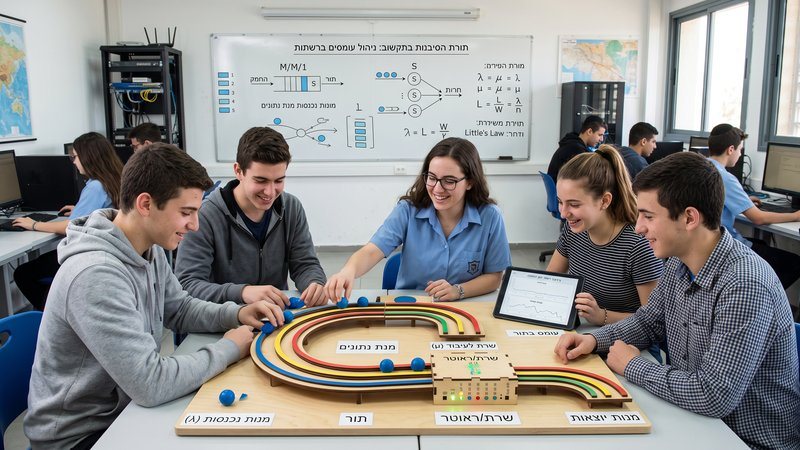
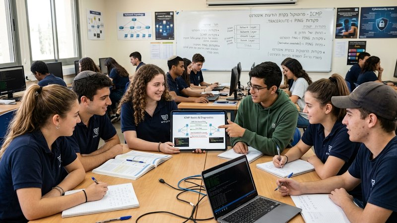
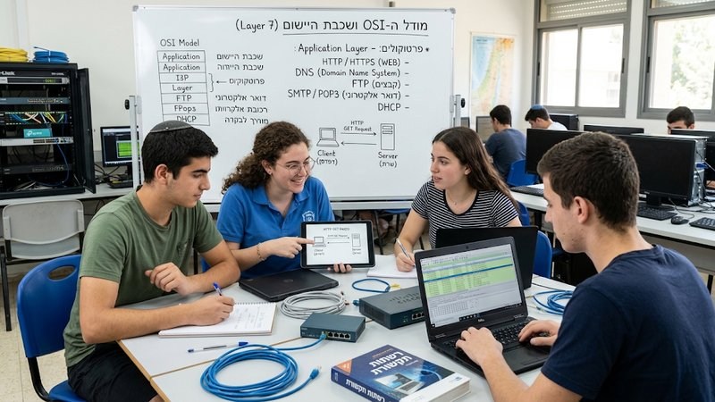
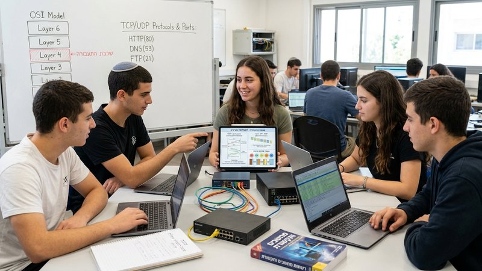
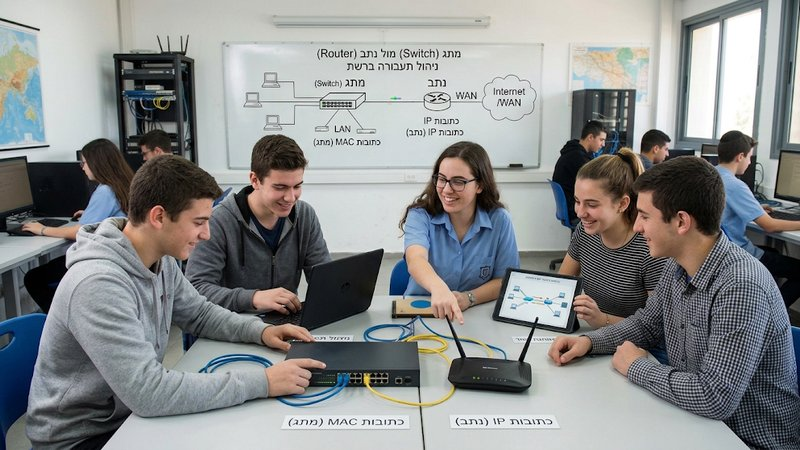
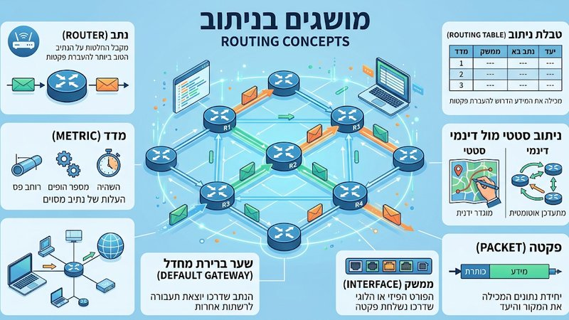
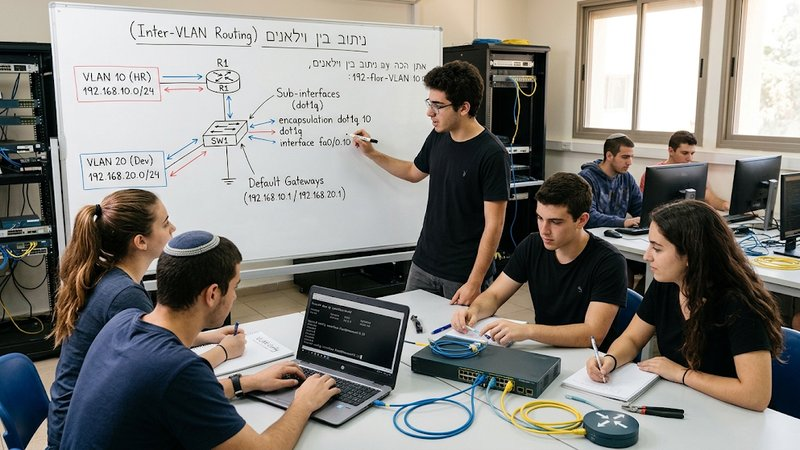

בחר/י את הנושא שלך
26 נושאים

נושא 1
מבוא לתקשוב: המסע אל לב המחשב
היכרות ראשונה עם עולם המחשוב — מהו מחשב, סוגי מחשבים, והרכיבים שמרכיבים אותו מבפנים.
כניסה לנושא

נושא 2
מבוא לבטיחות במעבדת תקשוב
כללי בטיחות, התנהלות נכונה בסביבת עבודה טכנית, וטיפול נכון בציוד רשת ומחשוב.
כניסה לנושא

נושא 3
מבוא למערכות הפעלה
מה תפקידה של מערכת ההפעלה, איך היא מנהלת את החומרה, והשוואה בין המערכות הנפוצות.
כניסה לנושא

נושא 4
תרגילי מעבדה עם סימולטור Packet Tracer
הכרות עם כלי הסימולציה שילווה אותנו לאורך השנה — בניית טופולוגיות רשת ראשונות.
כניסה לנושא

נושא 5
ההבדל בין שרת למחשב לקוח
איך מחשבים "מדברים" ביניהם — מבנה רשת שרת-לקוח, מי מבקש ומי מספק, ולמה זה הבסיס לכל שירות דיגיטלי.
כניסה לנושא

יחידה 1
יסודות התקשורת
המושגים הבסיסיים של תקשורת נתונים — איך מידע עובר בין מכשירים ברשת.
כניסה לנושא

יחידה 2
מערכות הפעלה של מתג / נתב
עבודה בסביבת שורת הפקודה (CLI) של מתג ונתב — הגדרות בסיסיות וניהול ראשוני.
כניסה לנושא

יחידה 3
פרוטוקולים ומודלים
מודל השכבות (OSI / TCP-IP) והפרוטוקולים המרכזיים שמנהלים את התקשורת ברשת.
כניסה לנושא

יחידה 4
השכבה הפיזית
כבלים, מחברים, ואמצעי תקשורת פיזיים — איך הביטים בפועל "נוסעים" בין מכשירים.
כניסה לנושא

יחידה 5
שיטות מיספור
בינארי, הקסדצימלי ועשרוני — השפה שבה מחשבים ורכיבי רשת "חושבים" בפועל.
כניסה לנושא

יחידה 6
פרוטוקול ARP ופרוטוקול DHCP
איך מכשיר מוצא את הכתובת הפיזית של שכנו ברשת, ואיך הוא מקבל כתובת IP באופן אוטומטי.
כניסה לנושא

שכבת הקו
המעבר בין התפיסה הלוגית של הרשת לשימוש הפיזי בפועל — מסגרות, כתובות MAC, והתקנים שמממשים הכל בשטח.
כניסה לנושא

יחידת חקר
פרוטוקול IPv6
מרחב הכתובות של IPv4 הולך ואוזל — כתובות 128 סיביות, כללי קיצור, סוגי כתובות, וSubnetting בתקן חדש.
כניסה לנושא

חלק ב׳
עקרונות המיתוג ותפקידה של כתובת ה-MAC
איך מתג ברשת מקבל החלטות ניתוב מבוססות כתובת MAC — טבלת הכתובות, למידה אוטומטית, והתפקיד הייחודי של כל התקן ברשת.
כניסה לנושא

יחידה 8
סבנטינג וארכיטקטורת VLSM
חלוקת רשת IP גדולה לתתי-רשתות: מחלקות IP, CIDR, מנגנון ההשאלה הבינארית, 4 שלבי החישוב, ו-VLSM שמונע בזבוז כתובות.
כניסה לנושא

יחידה 9
פרוטוקול ICMP: בקרת שגיאות ואבחון רשת
כלי האבחון של הרשת — PING ו-TRACEROUTE, הודעות שגיאה, ואיך מאבחנים בעיות תקשורת.
כניסה לנושא

יחידה 11
שכבת הרשת (Network Layer)
תוכן היחידה יתווסף בהמשך.
כניסה לנושא

יחידה 10
שכבת התעבורה: TCP, UDP ופורטים
ההבדל בין TCP ל-UDP, ומספרי הפורטים הסטנדרטיים של שירותי הרשת הנפוצים (HTTP, DNS, FTP).
כניסה לנושא

יחידה 12
מתג מול נתב: ניהול תעבורת רשת
ההבדל התפקודי בין Switch ל-Router, LAN מול WAN, וכתובות MAC מול IP.
כניסה לנושא

יחידה 13
מושגי ניתוב: איך מתקבלת ההחלטה לאן לשלוח פקטה
טבלת ניתוב, מדד (Metric), ניתוב סטטי מול דינמי, שער ברירת מחדל, וממשקי רשת.
כניסה לנושא

יחידה 14
ניתוב בין VLAN-ים (Inter-VLAN Routing)
כיצד Router-on-a-Stick מאפשר תקשורת בין VLAN-ים נפרדים באמצעות sub-interfaces ו-encapsulation dot1q.
כניסה לנושא

יחידה 7
מערכות בית חכם — תרגול ארדואינו
בניית פרויקטים מעשיים עם Arduino — חיישנים, בקרה ואוטומציה בסביבת בית חכם.
כניסה לנושא

סיכום
חזרות ומבחנים
סיכומי חומר, שאלות תרגול ומבחני הדמיה לקראת סוף היחידות והשנה.
כניסה לנושא